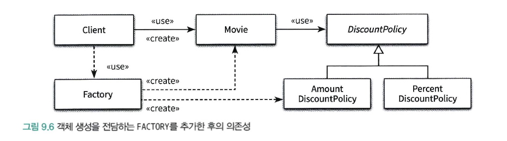
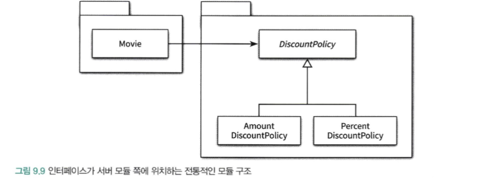

개방-폐쇄 원칙
개방폐쇄의 원칙(OCP, Open-Closed Principle)은 다음과 같이 설명된다.
소프트웨어 개채(클래스, 모듈, 함수 등등)는 확장에 대해 열려 있어야 하고, 수정에 대해서는 닫혀 있어야 한다.
여기서의 키워드는 확장과 수정이다.
- 확장에 대해 열려있다 - 애플리케이션의 요구사항이 변경될 때 이 변경에 맞게 새로운 동작을 추가해서 애플리케이션의 기능을 확장할 수 있다.
- 수정에 대해 닫혀있다 - 기존의 코드를 수정하지 않고도 애플리케이션의 동작을 추가하거나 변경할 수 있다.
컴파일타임 의존성을 고정시키고 런타임 의존성을 변경하라
사실 개방-폐쇄 원칙은 런타임 의존성과 컴파일타임 의존성에 관한 이야기다.
- 런타임 의존성 - 실행 시에 협력에 참여하는 객체들 사이의 관계다.
- 컴파일타임 의존성 - 코드에서 드러나는 클래스들 사이의 관계다.

위의 코드에서는 개방-폐쇄 정책을 이미 따르고 있다.
만약 복합 할인 정책이 추가되는 경우 기존의 코드는 수정하지 않고 OpverlappedDiscountPolicy 만 추가하여 기능을 확장 할 수 있다
따라서 확장에 대해 열려 있어야 하고, 수정에 대해서는 닫혀있다.

추상화가 핵심이다.
개방-폐쇄 원칙의 핵심은 추상화에 의존하는 것이다. 여기서 추상화 와 의존 이라는 두 개념 모두가 중요하다.
추상화란 핵심적인 부분만 남기고 불필요한 부분은 생략함으로써 복잡성을 극복하는 기법이다.
추상화 과정을 거치면 문맥이 바뀌더라도 변하지 않는 부분만 남게 되고 문맥에 따라 변하는 부분은 생략된다.
추상화를 사용하면 생략된 부분을 문맥에 적합한 내용으로 채워넣음으로써 각 문맥에 적합하게 기능을 구체화하고 확장할 수 있다.
따라서 추상화 부분은 수정에 닫혀 있다. (공통적인 부분은 변하지 않는다)
추상화를 통해 생략된 부분은 확장의 여지를 남긴다. 이것이 추상화가 개방-폐쇄 원칙을 가능하게 만드는 이유다.
하지만 단순히 어떤 개념을 추상화했다고 해서 수정에 대해 닫혀 있는 설게를 만들 수 있는 것은 아니다.
개방-폐쇄 원칙에서 폐쇄를 가능하게 하는 것은 의존성의 방향이다.
수정에 대한 영향을 최소화하기 위해서는 모든 요소가 추상화에 의존해야 한다.
1 | public class Movie { |
위의 예제에서는 Movie 클래스는 안정적인 DiscountPolicy에 대해서만 의존한다.
따라서 할인정책이 수정되더도 calculateMovieFee 메서드는 수정하지 않고 DiscountPolicy 객체만 변경하면 되기 때문에
수정 에 닫혀 있고 확장 에 열려 있는 구조가 된다.
생성 사용 분리
결합도가 높아질수록 개방-폐쇄 원칙을 따르는 구조를 설계하기가 어려워진다. 알아야 하는 지식이 많으면 결합도도 높아진다.
특히 객체 생성에 대한 지식은 과도한 결합도를 초래하는 경향이 있다.
객체의 타입과 생성자에 전달해야 하는 인자에 대한 과도한 지식은 코드를 특정한 컨텍스트에 강하게 결합시킨다.
컨텍스트를 바꾸기 위한 유일한 방법은 코드 안에 명시돼 있는 컨텍스트에 대한 정보를 직접 수정하는 것 뿐이다.
1 | public class Movie { |
위의 코드에서 AmountDiscountPolicy 를 PercentDiscountPolicy 로 변경하는 방법은 직접 코드를 수정하는 방법 뿐이다.
이것은 동작을 추가하거나 변경하기 위해 기존의 코드를 수정하도록 만들기 때문에 개방-폐쇄 원칙을 위반한다.
따라서 유연하고 재사용 가능한 설계를 원한다면 객체와 관련된 두 가지 책임을 서로 다른 객체로 분리해야 한다.
하나는 생성하는 것, 하나는 객체를 사용하는 것 이다.
한 마디로 말해서 객체에 대한 생성과 사용을 분리(seperation use from creation) 해야 한다.
사용으로부터 생성을 분리하는 데 사용되는 가장 보편적인 방법은 객체를 생성할 책임을 클라이언트로 옮기는 것이다.
다시 말하면 Movie의 클라이언트가 적절한 DiscountPolicy 인스턴스를 생성한 후, Movie에게 전달하는 것이다.
1 | public class Client { |
현재 컨텍스트에 관한 결정권을 가지고 있는 클라이언트로 컨텍스트에 대한 지식을 옮김으로써 Movie는 특정한 클라이언트에 결합되지 않고 독립적일 수 있다.
Factory 추가하기
생성 책임을 Client로 옮긴 배경에는 Movie는 특정 컨텍스트에 묶여서는 안 되지만 Client는 묶여도 상관이 없다는 전제가 깔려있다.
하지만 Movie를 사용하는 Client도 특정한 컨텐스트에 묶이지 않기를 바란다고 가정해보자.
Client의 코드를 다시 보면 Movie의 인스턴스를 생성하는 동시에 getFee 메세지도 함께 전송한다는 것을 알 수 있다.
Client 역시 생성과 사용의 책임을 함께 지니고 있는 것이다.
이 경우에는 객체 생성과 관련된 책임만 전담하는 별도의 객체를 추가하고 Client는 이 객체를 사용하도록 만들 수 있다.
이처럼 생성과 사용을 분리하기 위해 객체 생성에 특화된 객체를 FACTORY라고 부른다.
1 | public class Factory { |
1 | public class Client { |
이제는 Client는 Factory를 사용하여 생성된 Movie의 인스턴스를 반환받아 사용하기만 하면 된다.
factory를 사용하면 Movie와 AmountDiscountPolicy를 생성하는 책임을 모두 FACTORY로 이동할 수 있다.
이제 Client에는 사용과 관련된 책임만 남게 되는데 하나는 FACTORY를 통해 생성된 Movie 객체를 얻기 위한 것이고
다른 하나는 Movie를 통해 가격을 계산하기 위한 것이다.
Client는 오직 사용과 관련된 책임만 지고 생성과 관련된 어떤 지식도 가지지 않을 수 있다.

순수한 가공물에게 책임 할당하기
책임 할당의 가장 기본이 되는 원칙은 책임을 수행하는 데 필요한 정보를 가장 많이 알고 있는 INFORMATION EXPERT에게 책임을 할당하는 것이다.
어떤 책임을 할당하고 싶다면 제일 먼저 도메인 모델 안의 개념 중에서 적절한 후보가 존재하는지 찾아봐야 한다.
하지만 방금전에 추가한 Factory는 도메인 모델에 속하지 않는다.
Factory를 추가한 이유는 순수하게 기술적인 결정이다. 전체적으로 결합도를 낮추고 재사용성을 높이기 위해 도메인 개념에게 할당돼 있던 객체 생성 책임을
도메인 개념과는 아무런 상관이 없는 가공의 객체로 이동시킨 것이다.
표면적 분해 vs 행위적 분해
- 표면적 분해 - 도메인에 존재하는 사물 또는 개념을 표현하는 객체들을 이용해 시스템을 분해하는 것
- 도메인 모델에 담겨 있는 개념과 관계를 따르며 도메인과 소프트웨어 사이의 표현적 차이를 최소화하는 것을 목적으로 한다.
- 객체지향 설계를 위한 가장 기본적인 접근법
- 행위적 분해 - 도메인 개념을 표현한 객체가 아닌 설계자가 편의를 위해 임의로 만든 객체를 이용해 시스템을 분해하는 것
- 도메인 개념을 표현하는 객체에게 책임을 할당하는 것만으로는 부족한 경우 발생
- 데이터베이스 접근을 위한 객체와 같이 도메인 개념들을 초월하는 기계적인 개념이 필요한 경우도 있다. (DAO와 같은.)
- 책임을 할당하기 위해 창조죄는 도메인과 무관한 인공적인 객체를 PURE FABRICATION(순수한 가공물)이라 한다.
- 어떤 행동을 추가하려고 하는데 이 행동을 책임질 마땅한 도메인 개념이 존재 하지 않는 경우 PURE FABRICATION을 생성하고
이 객체에게 책임을 할당하면 된다. - 객체지향 어플리케이션에서는 도메인 개념을 반영하는 객체들 보다 인공적으로 창조한 객체들이 더 많은 비중을 차지한다.
PURE FABRICATION 패턴
객체지향 설게는 문제 도메인 상의 개념을 소프트웨어 객체로 구현하고 책임을 할당한다. 하지만 만약 도메인 객체에 책임을 할당할 경우
HIGH COHESION, LOW COUPLING, 재사용성 등의 목적을 위반한다면 어떻게 해야 하는가?문제 도메인 개념을 표현하지 않는, 인위적으로 또는 편의상 만든 클래스에 매우 응집된 책임을 할당하라. 이들 클래스는
문제 도메인 상에는 존재하지 않지만 순수하게 전체 설계의 품질을 높이기 위해 설계자의 임의에 따라 추가한 상상속의 가공물이다.PURE FABRICATION은 INFORMATION EXPERT 패턴에 따라 책임을 할당한 결과가 바람직하지 않을 경우 대안으로 사용된다.
어떤 객체가 책임을 수행하는 데 필요한 많은 정보를 가졌지만 해당 책임을 할당할 경우 응집도가 낮아지고 결합도가 높아진다면
가공의 객체를 추가해서 책임을 옮기는 것을 고민하라순수한 가공물(pure fabrication)이라는 표현은 적절한 대안이 없을때 사람들이 창조적인 무언가를 만들어낸다는 것을 의미하는 관용적인 표현이다.
의존성 주입
사용하는 객체가 아닌 외부의 독립적인 객체가 인스턴스를 생성한 후 이를 전달해서 의존성을 해결하는 방법을 의존성 주입 이라고 부른다.
이 기법을 의존성 주입이라고 부르는 이유는 외부에서 의존성의 대상을 해결한 후 사용하는 객체 쪽으로 주입하기 때문이다.
의존성 주입은 의존성을 해결하기 위해 의존성을 객체의 퍼블릭 인터페이스에 명시적으로 드러내서 외부에서 필요한 런타임 의존성을 전달할 수 있도록
만드는 방법을 포괄하는 명칭이다.
생성자 주입 (Constructor Injection)
객체를 생성하는 시점에 생성자를 통한 의존성 주입
1 | Movie avartar = new Movie("아바타", Duration.ofMinutes(120), Money.wons(10000), new AmountDiscountPolicy()); |
setter 주입 (Setter Injection)
setter 주입은 이미 생성된 객체에 대해 setter 메서드를 통해 의존성을 해결한다.
1 | Movie avartar = new Movie("아바타", Duration.ofMinutes(120), Money.wons(10000)); |
setter 주입의 단점은 객체가 올바로 생성되기 위해 어떤 의존성이 필수적인지를 명시적으로 표현할 수 없다는 것이다.
setter 메서드는 객체가 생성된 후에 호출돼야 하기 때문에 setter 메서드 호출을 누락한다면 객체는 비정상적인 상태로 생성될 것이다.
메서드 주입 (Method Injection)
메서드 주입은 메서드 호출 주입 (method call injection)이라고도 부르며 메서드가 의존성을 필요로 하는 유일한 경우일 때 사용할 수 있다.
생성자 주입을 통해 의존성을 전달받으면 객체가 올바른 상태로 생성되는 데 필요한 의존성을 명확하게 표현할 수 있다는 장점이 있지만
주입된 의존성이 1~2개의 메서드에서만 사용된다면 각 메서드의 인자로 전달하는 것이 더 나은 방법일 수 있다.
1 | Movie avartar = new Movie("아바타", Duration.ofMinutes(120), Money.wons(10000)); |
숨겨진 의존성은 나쁘다
의존성 주입 외에도 의존성을 해결할 수 있는 방법이 존재한다.
대표적인 방법은 SERVICE LOCATOR 패턴이다. SERVICE LOCATOR는 의존성을 해결할 객체들을 보관하는 일종의 저장소다.
외부에서 객체에게 의존성을 전달하는 의존성 주입과 달리 SERVICE LOCATOR의 경우 객체가 직접 SERVICE LOCATOR에게 의존성을 해결해줄 것을 요청한다.
1 | public class Movie { |
1 | public class ServiceLocator { |
1 | ServiceLocator.provide(new AmountDiscountPolicy()); |
여기까지만 보면 SERVICE LOCATOR 패턴은 의존성을 해결할 수 있는 가장 쉽고 간단한 도구인 것처럼 보인다.
하지만 SERVICE LOCATOR 패턴의 큰 단점은 의존성을 감춘다는 것이다.
Movie는 DicountPolicy에 의존적이지만 Movie의 퍼블릭 인터페이스에 표시 되지 않고, 의존성은 암시적이며 코드 깊숙한 곳에 숨겨져 있다.
1 | Movie avartar = new Movie("아바타", Duration.ofMinutes(120), Money.wons(10000)); |
위의 경우 NullPointerException이 발생하게 된다.
의존성을 구현 내부로 감출 경우 의존성과 관련된 문제가 **컴파일 타임이 아닌 런타임에 가서야 발견된다는 사실을 알 수 있다. **
숨겨진 의존성이 이해하기 어렵고 디버깅하기 어려운 이유는 문제점을 발견할 수 있는 시점을 코드 작성 시점이 아니라 실행 시점으로 미루기 때문이다.
ServiceLocator는 내부적으로 정적 변수를 이용해 객체들을 관리하기 때문에 모든 단위 테스트 케이스에 걸쳐 ServiceLocator의 상태를 공유하게 된다.
이것은 각 단위 테스트는 서로 고립돼야 한다는 단위 테스트의 기본 원칙을 위반한 것이다.
캡슐화는 코드를 읽고 이해하는 행위와 관련이 있다. 클래스의 퍼블릭 인터페이스만으로 사용 방법을 이해할 수 있는 코드가 캡슐화의 관점에서 훌륭한 코드다.
클래스의 사용법을 익히기 위해 구현 내부를 샅샅이 뒤져야 한다면 그 클래스의 캡슐화는 무너진 것이다.
**숨겨진 의존성이 가지는 가장 큰 문제점은 의존성을 이해하기 위해 코드늬 내부 구현을 이해할 것을 강요한다. **
다라서 숨겨진 의존성은 캡슐화를 위반한다.
결과적으로 의존성을 구현 내부로 감추도록 강요하는 Service Locator는 캡슐화를 위반할 수밖에 없다.
숨겨진 의존성은 의존성의 대상을 설정하는 시점과 의존성이 해결되는 시점을 멀리 떨어트려 놓는다.
이것은 코드를 이해하고 디버깅하기 어렵게 만든다.
따라서 의존성 주입을 사용하여 외부 인터페이스에 의존성을 노출 시키는 것이 가장 깔끔하다
의존성 역전 원칙
객체 사이의 협력이 존재할 때 그 협력의 본질을 담고 있는 것은 상위 수준의 정책이다.
Movie와 AmountDiscountPolicy 사이의 협력이 가지는 본질은 영화의 가격을 계산하는 것이다.
어떻게 할인 금액을 계산할 것인지는 협력의 본질이 아니다.
다시 말해서 어떤 협력에서 중요한 정책이나 의사결정, 비지니스의 본질을 담고 있는 것은 상위 수준의 클래스이다.
그러나 이런 상위 수준의 클래스가 하위 수준의 클래스에 의존한다면 하위 수준의 변경에 의해 상위 수준 클래스가 영향을 받게 될 것이다.
의존성은 변경의 전파와 관련된 것이기 때문에 설계는 변경의 영향을 최소화하도록 의존성을 관리해야 한다.
상위 수준의 클래스는 어떤 식으로든 하위 수준의 클래스에 의존해서는 안 되는 것이다.
대부분 재사용하려는 대상은 상위 수준의 클래스이다.
상위 수준의 클래스가 하위 수준의 클래스에 의존하면 상위 수준의 클래스를 재사용할 때 하위 수준의 클래스도 필요하기 때문에 재사용하기가 어려워진다.
이 경우에도 추상화를 통해 해결한다. Movie와 AmountDiscountPolicy 모두가 추상화에 의존하도록 수정하면
하위 수준 클래스의 변경으로 인해 상위 수준 클래스가 영향을 받는 것을 방지할 수 있다.
또한 상위 수준을 재사용할 때 하위 수준의 클래스에 얽매이지 않고도 다양한 컨텍스트에서 재사용이 가능하다.
가장 중요한 것은 추상화에 의존하는 것이다.
유연하고 재사용 가능한 설계를 원한다면 모든 의존성의 방향이 추상 클래스나 인터페이스와 같은 추상화를 따라야 한다.
정리
- 상위 수준의 모듈은 하위 수준의 모듈에 의존해서는 안 된다. 둘 모두 추상화에 의존해야 한다.
- 추상화는 구체적인 사항에 의존해서는 안 된다. 구체적인 사항은 추상화에 의존해야 한다.
이를 의존성 역전 원칙(Dependency Inversion Principle, DIP) 이라고 부른다.
역전(Inversion)이라는 단어를 사용한 이유는
의존성 역전 원칙을 따르는 설계는 의존성의 방향이 전통적인 절차형 프로그래밍과는 반대 방향으로 나타나기 때문이다.
(전통적인 절차형에서는 상위 수준의 모듈이 하위 수준 모듈에 의존적이다.)
의존성 역전 원칙과 패키지
역전은 의존성의 방향뿐만 아니라 인터페이스의 소유권에도 적용된다.

이 그림에서 구체 클래스인 Movie, AmountDiscountPolicy, PercentDiscountPolicy는 모두 추상 클래스인 DiscountPolicy에 의존한다.
따라서 개방-폐쇄 원칙을 준수할뿐만 아니라 의존성 역전 원칙도 따르고 있기 때문에 이 설계가 유연하고 재사용 가능하다고 생각할 것이다.
하지만 Movie를 다양한 컨텍스트에 재사용하기 위해서는 불필요한 클래스들이 Movie와 함께 배포돼야만 한다.
Movie가 DiscountPolicy에 대해 컴파일 타임 의존성을 가진다.
이 말은 Movie 클래스를 빌드하기 위해 DiscountPolicy가 같은 패키지 내에 필요함을 의미한다.
하지만 DiscountPolicy가 있는 패키지에서는 AmountDiscountPolicy, PercentDiscountPolicy가 있기때문에 전체적인 빌드 타임이 증가한다.
따라서 Movie의 재사용을 위해 필요한 것이 DiscountPolicy 뿐이라면 DiscountPolicy를 Movie와 같은 패키지로 모으고
AmountDiscountPolicy, PercentDiscountPolicy를 별도의 패키지에 위치시켜 의존성 문제를 해결할 수 있다.
Seperated Interface 패턴

위의 그림과 같이 추상화를 별도의 독립적인 패키지가 아니라 클라이언트가 속한 패키지에 포함시켜야 한다.
그리고 함께 재사용될 필요가 없는 클래스들은 별도의 독립적인 패키지에 모아야 한다.
이와 같은 기법을 Seperated Interface 패턴 이라 부른다.
이제 Movie클래스를 다른 컨텍스트에서 사용하기 위해서는 단지 Movie, DiscountPolicy가 포함된 패키지만 재사용하면 된다.
따라서 의존성 역전 원칙에 따라 상위 수준의 협력 흐름을 재사용하기 위해서는 추상화가 제공하는 인터페이스의 소유권 역시 역전시켜야 한다.
전통적인 패러다임에서는 상위 수준의 모듈이 하위 수준 모듈에 의존했다면
객체지향 패러다임에서는 상위 수준 모듈과 하위 수준 모듈이 모두 추상화에 의존한다.
전통적인 패러다임에서는 인터페이스가 하위 수준 모듈에 속했다면 객체지향 패러다임에서는 인터페이스가 상위 수준 모듈에 속한다.훌륭한 객체지향 설계를 위해서는 의존성을 역전시켜야 한다.
그리고 의존성을 역전시켜야만 유연하고 재사용 가능한 설계를 얻을 수 있다.
유연한 설계는 유연성이 필요할 때만 옳다
유연하고 재사용 가능한 설계란 런타임 의존성과 컴파일타임 의존성의 차이를 인식하고
동일한 컴파일 타임 의존성으로부터 런타임 의존성을 만들 수 있는 코드 구조를 가진 설계를 의미한다.
하지만 유연하고 재사용 가능한 설계가 항상 좋은 것은 아니다.
설계의 미덕은 단순함과 명확함으로부터 나온다. 단순하고 명확한 설계를 가진 코드는 읽기 쉽고 이해하기도 편하다.
변경하기 쉽고 확장하기 쉬운 구조를 만들기 위해서는 단순함과 명확함을 버리게 된다.
유연한 설계 = 복잡한 설계
사실 유연한 설계 = 복잡한 설계 이다.
변경에 대비 하기 위해 유연한 설계를 하고 복잡한 구조를 만든다.
하지만 변경은 예상이 아니라 현실이어야 한다. 미래에 일어날지도 모른다는 막연한 불안감은 불필요하게 복잡한 설계를 낳는다.
아직 일어나지 않은 변경은 변경이 아니다.
유연성은 항상 복잡성을 수반한다
유연하지 않은 설계는 단순하고 명확하다. 유연한 설계는 복잡하고 암시적이다.
객체지향에 입문한 개발자들이 가장 이해하기 어려워하는 부분이 바로 코드 상에 표현된 정적인 클래스 구조와 실행 시점의 동적인 구조가 다르다는 사실이다.
절차적 프로그래밍 방식은 코드의 구조가 곧 실행구조이다.
하지만 객체지향 프로그래밍 방식에서 클래스의 구조는 발생 가능한 모든 객체 구조를 담는 틀일 뿐이다.
특정 시점의 객체 구조를 파악하는 유일한 방법은 클래스를 사용하는 클라이언트 코드 내에서 객체를 생성하거나 변경하는 부분을 직접 살펴보는 것이다.
불필요한 유연성은 불필요한 복잡성을 낳는다.
단순하고 명확한 해법이 그런대로 만족스럽다면 유연성을 제거하라
유연성은 코드를 읽는 사람들이 복잡함을 수용할 수 있을 때만 가치가 있다.
하지만 복잡성에 대한 걱정보다 유연하고 재사용 가능한 설계의 필요성이 더 크다면 코드의 구조와 실행 구조를 다르게 만들어야 한다.
협력과 책임이 중요하다
설계를 유연하게 만들기 위해서는 먼저 역할, 책임, 협력에 초점을 맞춰야 한다.
다양한 컨텍스트에서 재사용할 필요가 없다면 설계를 유연하게 만들 당위성도 함께 사라진다.
중요한 비지니스 로직을 처리하기 위해 책임을 할당하고 협력의 균형을 맞추는 것이 객체 생성에 관한 책임을 할당하는 것 보다 우선이다.
객체를 생성하는 방법에 대한 결정은 모든 책임이 자리를 잡은 후 가장 마지막 시점에 내리는 것이 적절하다.
의존성을 관리해야 하는 이유는 역할, 책임, 협력의 관점에서 설계가 유연하고 재사용 가능해야 하기 때문이다.
따라서 역할, 책임, 협력에 먼저 집중해야 한다.
참고
- Objects(코드로 이해하는 객체지향 설계) - chapter9. 유연한 설계